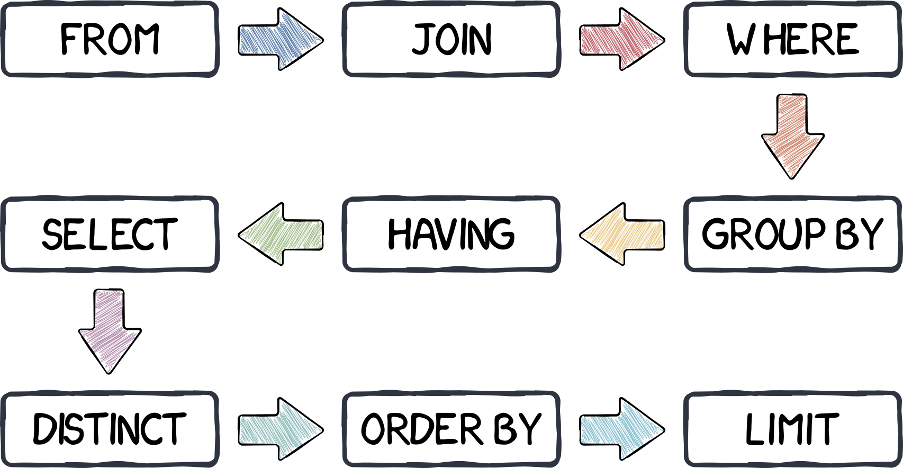

Jed Rembold
Monday, October 10, 2022
SELECT "id", "desc"
FROM keychains
WHERE state = 'OR'
ORDER BY date_purch DESCSELECT
MODE() WITHIN GROUP (ORDER BY state)
FROM keychains
WHERE loc ILIKE '%National Park%'SELECT DISTINCT state
FROM keychains
WHERE price > 10.00
ORDER BY date_purch
LIMIT 1SELECT
MAX(salmon) * trout AS col_a,
trout + CAST(halibut AS int) - snapper AS col_b,
cod / (snapper % 10) AS col_c
FROM mysterious_table
WHERE halibut LIKE '%0'
AND cod::TEXT ILIKE '%.__'| Name | Type |
|---|---|
col_a |
DOUBLE PRECISION |
col_b |
INTEGER |
col_c |
NUMERIC |
name:color:radius (cm):price:amount in package
basketball:orange:24:11.97:1
bowling ball:teal:12:115:1
ping pong ball:white:0.79:9.68:12
tennis ball:green:6.86:4.99:3| name | type | weight | price | fluid_vol |
|---|---|---|---|---|
| Milk | dairy | NULL | 3.50 | 128 |
| Ketchup | condiment | NULL | 4.00 | 32 |
| Cheese | dairy | 32 | 14.00 | NULL |
| Apples | fruit | 8 | 1.00 | NULL |
| Salami | meat | 16 | 7.00 | NULL |
| Chicken | meat | 64 | 12.00 | NULL |
| Yogurt | dairy | NULL | 3.50 | 32 |
SELECT DISTINCT type, fluid_vol
FROM fridge_items
WHERE price < 10
ORDER BY type, fluid_volSELECT SUM(weight)
FROM fridge_items
WHERE name LIKE '%s%'SELECT COUNT(price)
FROM fridge_items
WHERE price > weightSELECT
percentile_cont(0.5)
WITHIN GROUP
(ORDER BY price) AS mdprice
FROM fridge_items
WHERE fluid_vol IS NOT NULL
OR price % 1 > 0| Name | Type | Description |
|---|---|---|
pid |
TEXT |
A unique player ID number |
full_name |
TEXT |
The full player name, first then last |
round_num |
INT |
What round this is at the given event |
strokes |
INT |
The number of strokes taken that round |
event_name |
TEXT |
The full event name |
par_score |
INT |
The par number of strokes for the round |
date_played |
DATE |
The date the round was played |
How many different events did the player with ID 007 play in the year 2021?
What is the name of the player who scored the lowest number of
strokes across the second round at the event
'Augusta 2021'?
What was the average number of strokes of all players with the first name “Beth” who shot under par in any round played on the 4th of July, 2022?
All of the following statements about SQL indexes are true except for which?
It is frequently the case that values in a particular table column all belong to a smaller subset of categories or options
With current methods, if you want to compare some sort of aggregate between those categories or options, you need to do it in multiple queries:
SELECT AVG(age)
FROM voters
WHERE party = 'D'SELECT AVG(age)
FROM voters
WHERE party = 'R'This rapidly becomes intractable if you want to compare across many categories
GROUP BY commandGROUP BY gathers together all rows with
matching values from a particular column
DISTINCT on a columnSELECT grouped_column
FROM table_name
GROUP BY grouped_column;DISTINCTGROUP BY is to be
able to run aggregates across all potential groups
simultaneously for comparisonSELECT
col_name,
min(col_name),
avg(col_name2)
FROM table_name
GROUP BY col_name;Looking back at the New York City addresses table, how can we answer:
DISTINCT or
UNIQUE, you can group by multiple
columnsSELECT
col_name,
min(col_name),
avg(col_name2)
FROM table_name
GROUP BY col_name, col_name2;GROUP BY can act on whatever
our current table structure is, so can also work seamlessly on joined
tablesSELECT
t1.col_name,
COUNT(t2.col_name3),
FROM table_name1 AS t1
JOIN table_name2 AS t2
ON t1.col_name = t2.col_name2
GROUP BY t1.col_name;WHERE
WHERE actions happen before any
aggregates can be computedHAVING
HAVING filters take place
after groups and aggregates can be computedSELECT
col_name,
min(col_name),
avg(col_name2)
FROM table_name
GROUP BY col_name
HAVING min(col_name) > 50;